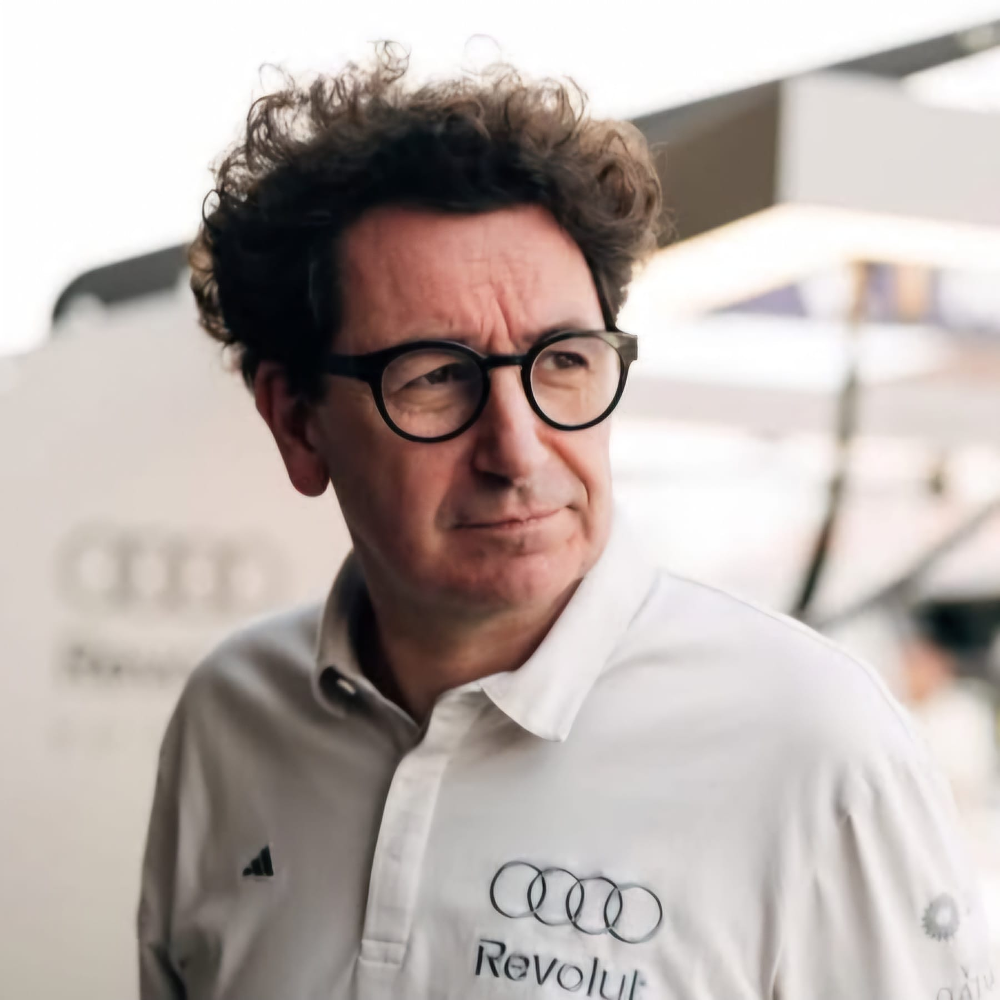

Mattia Binotto
Mattia Binotto
Team: Audi
Nationality: Swiss
Born: 1969
In charge since: 2026
History: Binotto, born in Lausanne, Switzerland, is Team Principal of the Audi Formula 1 Project as of March 2026. He spent nearly three decades at Scuderia Ferrari, where he rose from engine department engineer to Technical Director and later Team Principal (2019–2022).
Binotto joined Sauber in 2024 to oversee Audi’s Formula 1 project and became Head of the Audi F1 Program, ensuring close cooperation between Neuburg’s power unit division and Hinwil’s chassis base. He took over the Team Principal role directly in 2026, guiding Audi through its first full factory season.
Widely regarded as one of Formula 1’s leading technical minds, Binotto played a key role in the development of Ferrari’s championship-winning power units and helped modernize the team’s engineering structure. His combination of deep technical expertise, long-term strategic planning, and experience managing large-scale Formula 1 operations has made him a central figure in Audi’s ambition to establish itself as a front-running manufacturer in the sport.
